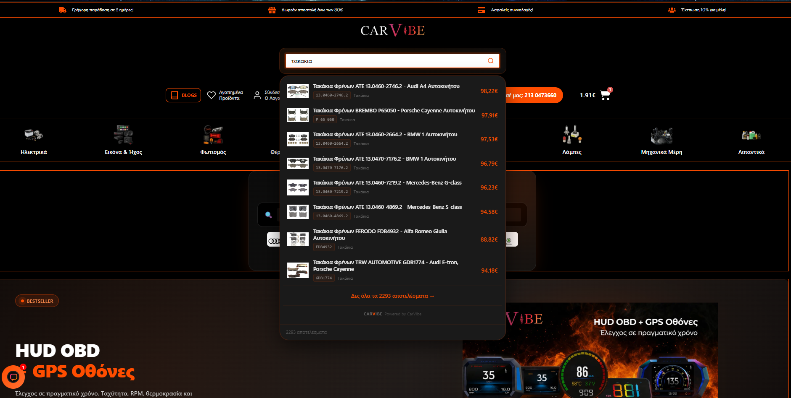
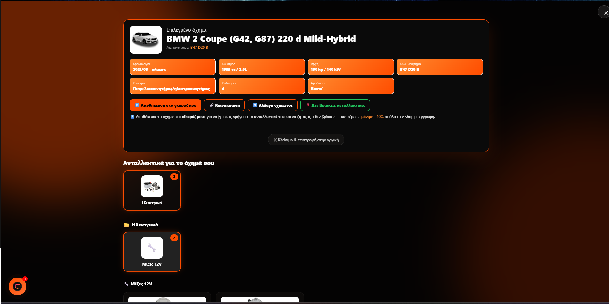
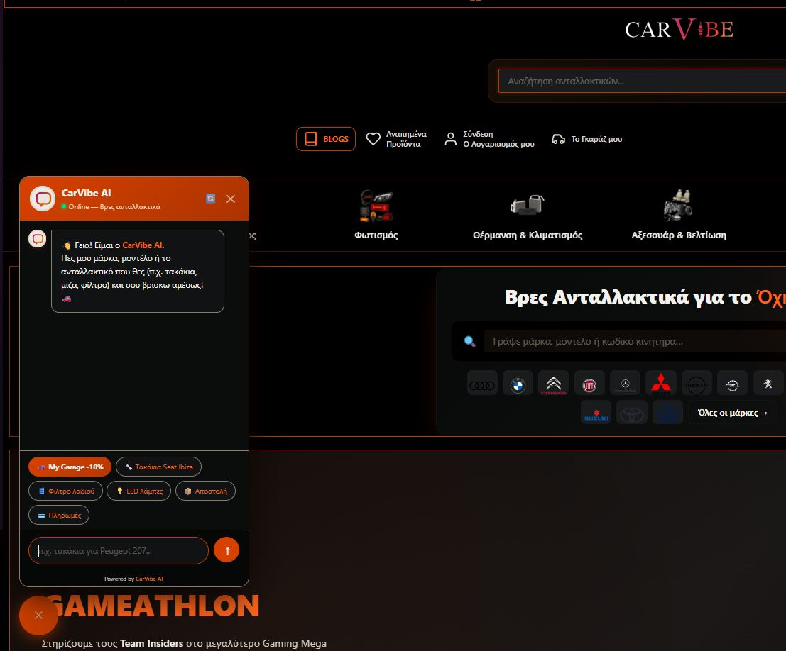
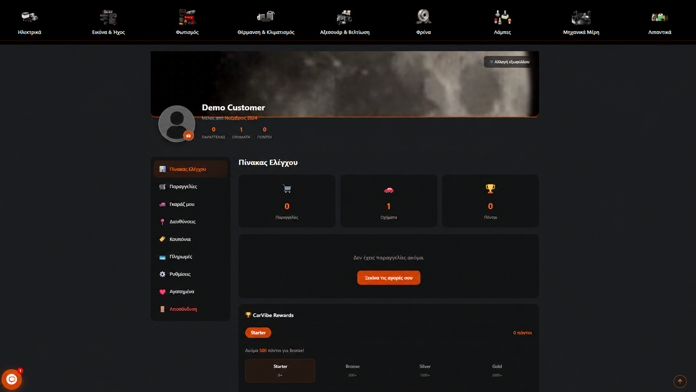
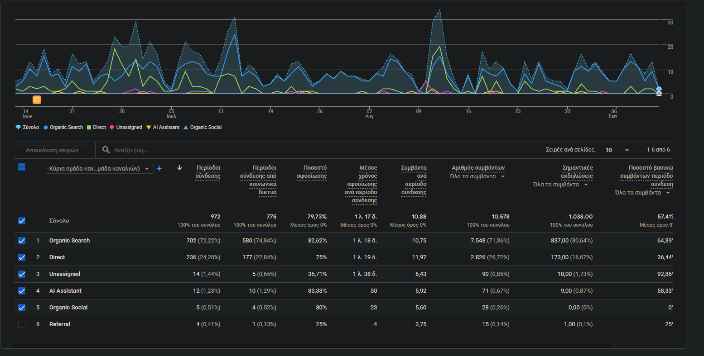

Instant Search
Typo-tolerant Greek search across product names, part numbers and automotive terminology.
An end-to-end automotive commerce experience connecting a large product catalog with intelligent search, vehicle fitment, AI-assisted discovery and business operations.

Automotive customers search with part numbers, informal product names, vehicle details and spelling variations. The platform needed to guide people to relevant products while supporting a catalog of tens of thousands of items.
I planned and assembled the storefront, developed custom product-discovery and catalog-management systems, created the AI-assisted parts journey, redesigned the customer area and connected analytics, SEO and operational workflows.
Selected systems
Typo-tolerant Greek search across product names, part numbers and automotive terminology.
Vehicle-led product discovery using a purpose-built compatibility dataset and interface.
Conversational parts discovery connected to real catalog and customer journeys.
Custom CSV workflows, taxonomy management and large-scale product synchronization.
My Garage, account redesign, rewards and service-request entry points.
Structured data, GA4 e-commerce measurement, Search Console and performance work.
Verified project snapshot / 14 Sep 2026
Experience




Third-party platforms are credited as dependencies. The portfolio claim covers the CarVibe implementation, custom systems, integrations, user experience and operational delivery. Private source code and infrastructure details are intentionally excluded.